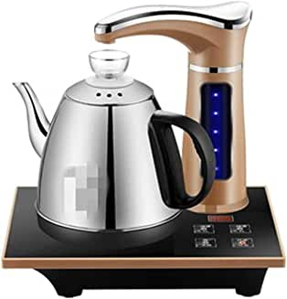

Shopping for Kettles with Boris
During a speech in Suffolk last week our All Powerful Leader
announced that if you have an old kettle that takes ages to boil,
it may cost you £20 to replace it, but if you get a new one,
you’ll save £10 a year every year on your electricity bill. During
the current cost of living crisis which was probably caused by the
Labour Government that left power a mere 12 years ago, every
little helps, as our supermarket friends would say, so having such
insightful advice is essential.
When shopping for a new kettle it is important to keep a few things in mind, since this is an essential bit of kit will not only save you a fortune on your bills but it that will also help reduce the amount of sewage that you will be drinking while enjoying a hot cuppa. Our leader is on his way out due to an extremely high amount of back-stabbing members in the Conservative Party and we eagerly await to find out if his replacement will be as keen as he is in ensuring our waterways are filled with excrement. While we wait, lets have a look at a few options when shopping for that new kettle for your kitchen.

The Brexit kettle
This is probably the kettle for us plebs suffering the consequences of the Will of the People. Brexit has brought our great nation many benefits, unfortunately we are still waiting for Jacob Rees-Mogg to announce them, but as soon as he does we will ensure you find out what they are. This kettle is one of the cheapest on Amazon but gets the job done. Take back control and enjoy a lovely cup of tea or a cup of boiling water if you are feeling the pinch like us and can't afford tea. Visit Shop

Glass kettle
This elegant kitchen appliance should be your choice if you are short of money to take the kids out for activities. You can all sit around the kettle watching the bubbles as the water boils. As a bonus you will all be keeping each other warm as the central heating will definitely be off this winter. Visit Shop

Carrie's choice
This model is a must have if like Carrie you want to impress your friends when they come over to see the new refurbished flat. It does everything that the other ones do but it costs a lot more, which should not be a problem if you are not paying for it anyway. Make sure to have it somewhere visible so that the husband's old Eton friends know you are not poor when they come over for a shooting weekend.Visit Shop